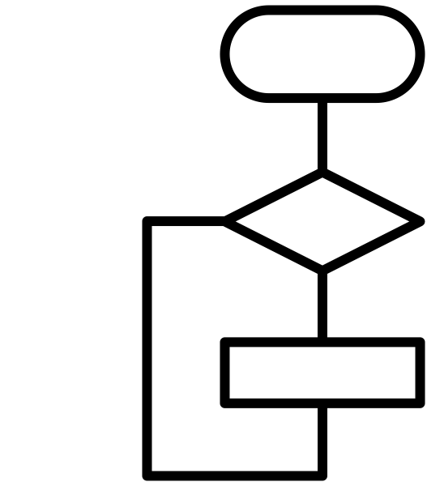
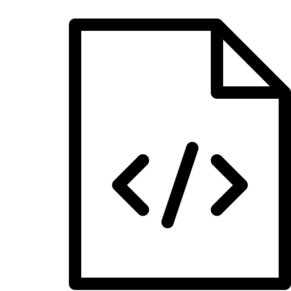

Why ASCM?
프로그래머로써 문제해결능력은 매우 중요합니다. 그래서 여러 IT기업에서는 알고리즘 테스트를 통해 직원을 선발하고 있습니다. 여러 Online Judge 사이트에서 이러한 알고리즘 문제들을 제공하고 있습니다. 하지만 여러 사이트에서 문제를 풀면, 한 번에 문제와 코드를 같이 관리하기 힘들다는 단점이 있습니다. 이에 영감을 얻어 문제와 코드를 통합하여 관리할 수 있는 ASCM을 만들게 되었습니다.한 눈에 보고, 쉽게 관리하세요!
Just 3 Steps
|  | Online Judge에서 알고리즘 문제를 선택하세요! 백준 https://www.acmicpc.net/ 코드그라운드 https://www.codeground.org/ HackerRank https://www.hackerrank.com/ SW Expert Academy https://www.swexpertacademy.com |
| 알고리즘 문제를 풀고, 문제링크와 코드를 업로드하세요! |  |
| 여러가지 Online Judge 문제들을 코드와 같이 관리할 수 있습니다! |